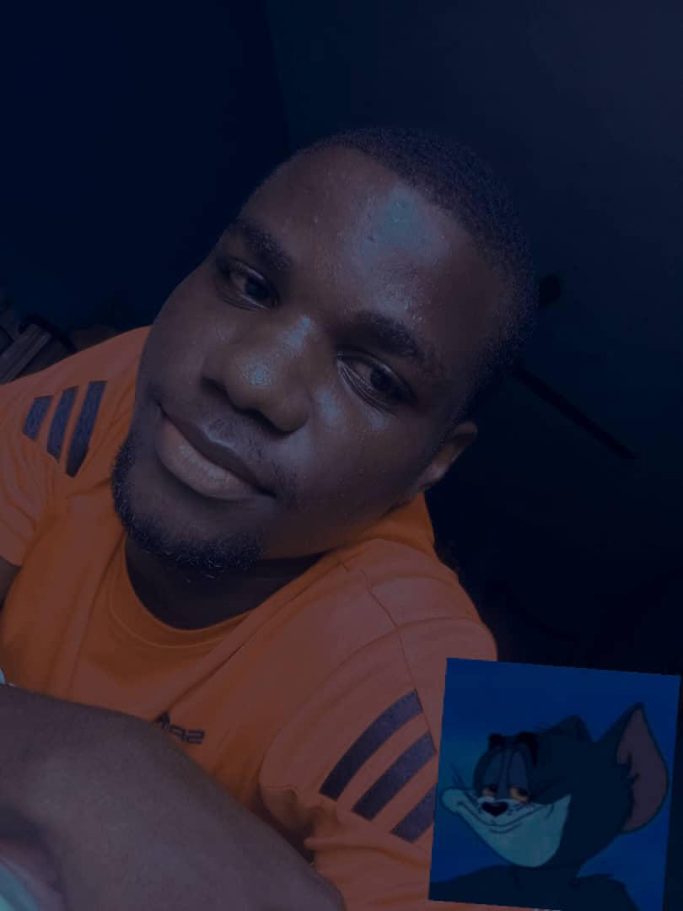

Nwodika, Tochukwu Solomon

CAREER OBJECTIVE(S)
To become a facilitator who is keen to helping different categories of leaners to achieve their learning objectives
To become a reputable leader
To collaborate with other educational experts and institutions to solve learning problems at the local and international level
To become a sustainable change driver
RESEARCH INTEREST
Educational research, media literacy, educational technology, open and distance learning, and extension education.
PROFILE
Contact Address: 82 Owolabi Street, Diamond Estate Satellite Town Lagos
Phone Number:
+234 808 016 6728
Sex: Male
Date of Birth: 12th June 1999
Nationality: Nigeria
State: Lagos
LGA: Amowo-Odofin
Marital Status: Single
E-Mail:
nwodikasolomon1999@gmail.com
EDUCATIONAL INSTITUTIONS ATTENDED
Central School Umunya 2011
Great Micheal Comprehensive College 2016
University of Nigeria Nsukka 2023
Alison Schools2023
National Youth Service Corps (NYSC)2024
New HorizonS Nigeria 2024
ACADEMIC QUALIFICATIONS OBTAINED
First school leaving certificate 2011
Seni9or School Certificate Examination (SSCE-WAEC) 2016
Degree Certificate (B.Ed Adult Education/Government) (Second Class, Upper Division) 2023
WORK EXPERIENCE
CHRISMECH Enterprises (2017-2019)
Thiano and Bevisco Synthetic (2022-TILL DATE)
SKILLS/COMPETENCIES
Full-stack computer programming
Research
OTHERS
CONTACT ME
MY HOBBIES
© SOLEXSAGE. All rights reserved.